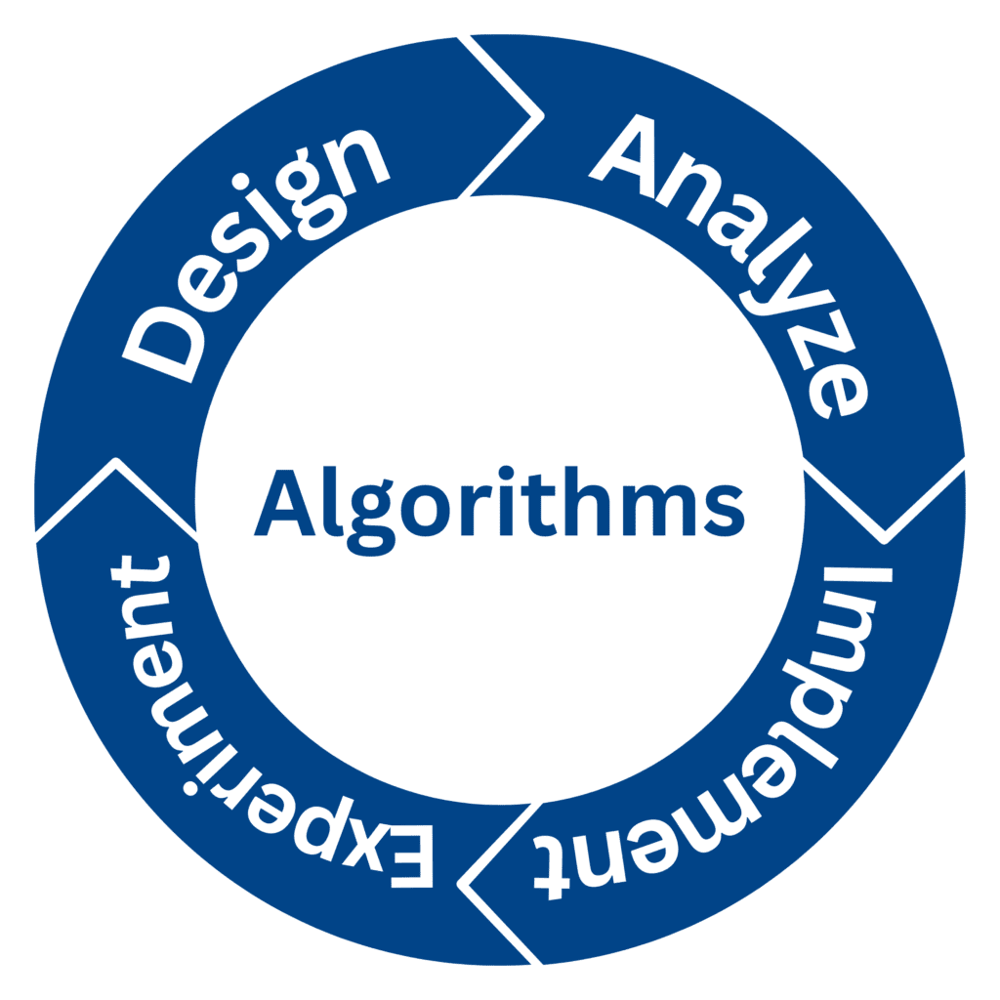

Algorithm Design

Probability And Statistics
Principle Of Microeconomics
.png)
Digital logic design

Education is the transmission of knowledge, skills, and character traits and comes in many forms. Formal education happens in a complex institutional framework, like public schools. Non-formal education is also structured but takes place outside the formal schooling system while informal education is unstructured learning through daily experiences. Formal and non-formal education are divided into levels that include early childhood education, primary education, secondary education, and tertiary education. Other classifications focus on the teaching method, like teacher-centered and student-centered education, and on the subject, like science education, language education, and physical education. The term "education" can also refer to the mental states and qualities of educated people and the academic field studying educational phenomena. The precise definition of education is disputed and there are disagreements about what the aims of education are and to what extent education is different from indoctrination by fostering critical thinking. These disagreements affect how to identify, measure, and improve forms of education. Fundamentally, education socializes children into society by teaching cultural values and norms. It equips them with the skills needed to become productive members of society.